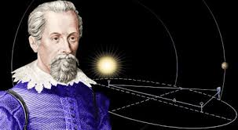

KEPLER
Năm 1596, một giáo viên toán người Đức chưa có tiếng tên là Johannes Kepler(1) cho xuất bản một cuốn sách mang tựa đề Bí mật vũ trụ, trong đó ông ủng hộ thuyết nhật tâm của Copernicus, sách này gây sửng sốt các học giả khắp nơi. Ông tuyên bố:
- Copernicus có chỗ nhầm lẫn. Các hành tinh chuyển động quanh Mặt trời theo các hình tròn đơn giản. Tôi đã khám phá một sơ đồ toán học hoàn chỉnh giải thích khoảng cách giữa các đường tròn này.

.
Một hôm, ý tưởng đến với Kepler trong khi ông đứng bên bảng đen. Ý tưởng này gây ấn tượng mạnh đến nỗi ông đoan chắc nó phải là sự thật. Khoảng cách giữa các quỹ đạo của các hành tinh đã được Copernicus tính toán theo tỷ lệ, chứ không phải là khoảng cách đích thực. Mặc dù các tỷ lệ này không khớp chính xác với sơ đồ của Kepler, nhưng ông tin chắc đấy không phải là lỗi của mình. Nhà toán học trẻ Kepler mạnh dạn khẳng định:
- Đấy là do Copernicus sử dụng những quan sát sai lầm trong các phép tính của ông ấy. Với những quan sát chính xác, tôi sẽ có thể chứng minh sơ đồ của tôi là đúng.
Theo ông biết, những quan sát chính xác nhất thế giới là do một quý tộc người Đan mạch tên là Tycho Brahe(2) thực hiện. Nhà thiên văn này đã xây dựng một đài quan sát trên đảo Hveen, là đảo riêng của ông, ngoài khơi bờ biển Đan mạch.
Kepler ao ước có được những quan sát của Brahe. Tuy nhiên, Kepler là một giáo viên nghèo sống ở Gratz, Áo, nên ông không đủ tiền để đi suốt quáng đường đến Đan mạch. Quá buồn rầu, ông cho rằng mình sẽ không bao giờ đủ khả năng để kiểm tra lý thuyết của mình.
Thế rồi đến năm 1597, Tycho Brahe cãi nhau với vua Đan mạch. Kết quả là ông khăn gói rời đảo Hveen, mang theo tất cả dụng cụ. Trong hai năm, ông lang thang ở châu Âu, để cuối cùng, đến năm 1599, ông định cư ở Praha (nay là thủ đô của công hòa Séc), làm nhà thiên văn chính thức cho Rudolph II, hoàng đế của Bohemia.
Khi Kepler nghe được tin này, ông hết sức vui mừng. Praha đủ gần để ông có thể đi đến đấy. Rốt cuộc, ông sẽ đủ khả năng để nghiên cứu những quan sát của Brahe. Ông nói với vợ là Barbara:
- Với những quan sát của Brahe, anh sẽ lập ra một mô hình mới về hệ Mặt trời.
Thật may mắn, nam tước Hoffman là ủy viên của hội đồng hoàng đế đang có mặt ở Gratz. Người giáo viên toán cạn túi nài nỉ xin đi nhờ trên xe ngựa của nam tước đến Praha. Ngày 1 tháng giêng 1600, hành trình của ông bắt đầu.
Đấy là ngày đầu tiên của một thế kỷ mới. Đối với Kepler, đấy là ngày đầu tiên của một cuộc đời mới.
Ngày 4 tháng 2, hai người gặp nhau tại đài thiên văn của Brahe ở lâu đài Benatek, gần Praha. Kepler là một người đàn ông trẻ, gầy gò trong bộ quần áo cũ sờn, với đôi mắt cận thị và u sầu. Brahe là một người ăn vận lộng lẫy, với đầu hói và ria mép cong rậm. Điều ngạc nhiên hơn là ông có chiếc mũi giả, bởi vì mũi thật của ông đã bị cắt trong một cuộc đấu kiếm tay đôi. Brahe tự làm cho mình chiếc mũi mới bằng hợp kim vàng và bạc. Nó lấp lánh dưới ánh sáng khiến Kepler không ngăn nổi tò mò nhìn vào nó. Brahe nói oai vệ:
- Tôi không nhận anh như một vị khách, mà là đón tiếp anh như một người bạn và đồng nghiệp trong việc quan sát bầu trời.
 .
.
Ông giới thiệu cho Kepler các dụng cụ mà ông đã thực hiện những lần quan sát, chính xác gấp mười lần so với dụng cụ của Copernicus. Những chiếc kính lục phân to tướng bằng gỗ và bằng kim loại. Một thước đo góc bằng đồng thau với đường kính 4,3m để đo độ cao của các sao hoặc các hành tinh. Đẹp nhất trong tất cả các thứ, đấy chính là niềm hãnh diện đặc biệt của Brahe, một vòng như xích đạo lớn mà ông dùng để đo góc giữa các sao hoặc giữa các sao và các hành tinh. Một quả cầu lớn bằng đồng thau, trên đó ông khắc lên những lần quan sát vị trí của một ngàn sao.
Kepler chớp mắt kinh ngạc. Chỉ quả cầu này thôi cũng đáng giá tám mươi năm tiền lương của mình. Trang bị của Brahe nằm ngoài tầm tưởng tượng của Kepler. Suy nghĩ về công trình ghi lại vị trí của một ngàn sao, ông bắt đầu thấy được những gì đang chờ phía trước, nếu ông tìm cách tạo ra một bộ môn thiên văn chính xác. Ông nóng lòng muốn đặt tay lên các số liệu quý giá mà Brahe đã dày công thu thập. Kepler hỏi nhỏ:
- Hẳn ông có nhiều sách ghi lại đầy đủ những quan sát. Lúc nào thì tôi có thể xem các sách ấy?
Nhưng ông choáng váng khi Brahe tỏ ra bí mật:
- Ồ, hãy gượm, rồi chúng ta sẽ thấy. Không cần vội.
Brahe biết rất rõ nhà toán học trẻ tuổi này muốn gì, song những quan sát của ông phải trả giá bằng nhiều nỗ lực đến mức ông không dẽ gì để mất nó.
Kepler thấy nhà thiên văn lớn này muốn giấu các số liệu quý giá cho riêng mình. Đây là một thất vọng lớn. Sauk hi ra đi từ Gratz, chẳng lẽ ông trở về tay không?
Kepler theo Brahe đi xem một số chỗ trong lâu đài. Ông thấy các vị trí dùng để quan sát và gặp người trợ lý cao cấp Longomontanus. Tycho Brahe giới thiệu:
- Longomontanus đã nghiên cứu quỹ đạo của Hỏa tinh. Ông ấy đang gặp trở ngại trong vấn đề này. So với các hành tinh khác xem ra Hỏa tinh khó đoán trước hơn.
Brahe tiếp tục giải thích rằng các hành tinh khác dường như chuyển động khá rõ nét theo đường tròn, nhưng đường tròn của Hỏa tinh cho đến nay vẫn chưa được vẽ ra.
Trong vài tuần tiếp theo, Kepler tìm cách thu thập nhiều chi tiết từ Brahe về chuyển động của các hành tinh. Sự hăm hở của ông quá lộ liễu, song Brahe không làm gì hơn là thỉnh thoảng chỉ đưa ra một vài số liệu. Kepler nghiến răng kiên trì chờ đợi, với hy vọng sẽ thuyết phục được nhà thiên văn Đan mạch ích kỷ này thay đổi ý kiến. Sau đó, Brahe gọi Kepler vào phòng làm việc và nói:
- Như tôi đã nói với anh, Longomontanus gặp trở ngại với Hỏa tinh.
Ông dừng lại và nhìn Kepler. Lấy ra hộp thuốc mỡ luôn mang theo bên mình, ông chậm rãi xoa lên chiếc mũi kim loại rồi nói tiếp:
- Thay vào đó, tôi quyết định phân công ông ấy nghiên cứu Mặt trăng. Vậy liệu anh có nhận nghiên cứu Hỏa tinh không?
Kepler vui mừng hẳn. Nếu ông tiếp quản công trình nghiên cứu Hỏa tinh, Brahe sẽ phải tiết lộ mọi quan sát của ông ta về hành tinh này. Kepler thốt lên:
- Hãy cho tôi tám ngày, tôi sẽ vẽ ra quỹ đạo của nó.
Nhưng, Kepler không giải quyết được trong tám ngày. Trong mười tám tháng tiếp theo, ông cặm cụi với quỹ đạo của Hỏa tinh mà không thu được kết quả. Đồng thời, ông cũng phải làm các việc vặt khác cho Brahe, vừa chán ngắt vừa mất thời gian mà ông rất ghét.
Đã vậy, ông cũng không thu được dữ liệu về các hành tinh khác. Như ông mong đợi, Brahe cung cấp dữ liệu về Hỏa tinh, nhưng phần còn lại thì vẫn giữ bí mật như trước. Đến bữa ăn tối, Kepler bị nhử bằng các mẩu thông tin mà Brahe ném ra cho ông như của bố thí. Có lần, không thể chịu đựng nổi, kepler rời Praha và đến sống với nam tước Hoffman tốt bụng, song Brahe thuyết phục ông hãy trở lại.
Thế rồi, ngày 13 tháng Mười năm 1601, nhà thiên văn lớn Tycho Brahe ngã bệnh sau một bữa đại tiệc, mười một ngày sau ông qua đời. Trong tình trạng mê sảng trên giường bệnh, ông vẫn nhắc đi nhắc lại:
- Xin đừng xem tôi là đã sống kiêu ngạo.
Hai tuần sau, Kepler được chính thức chỉ định người kế tục của Brahe. Cuối cùng, ông cũng có được tất cả dữ liệu để làm việc.
Kepler đi ngay vào viecj tìn cách giải quyết quỹ đạo của Hỏa tinh. Rất nhiều dữ liệu có sẵn về hành tinh này, vả lại ông quá mải mê trong công việc không sao dứt ra được. Ông trầm ngâm nói:
- Gia sử Hảo tinh chuyển động quanh Mặt trời theo đường tròn, thì điều khó khăn là tìm ra đường tròn tương ứng với những quan sát.
Ông vốn biết rằng Hỏa tinh không phải lúc nào cũng cách Mặt trời một khoảng cách như nhau. Mặt trời không phải là tâm điểm của đường tròn này. Ông cũng biết rằng vận tốc chuyển động của Hỏa tinh thay đổi, càng gần Mặt trời thì nó chuyển động càng nhanh hơn.
Kepler cho rằng cần có một lực nào đó để giữ một hành tinh quay quanh Mặt trời. Ông đoán lực này có thẻ bắt nguồn từ Mặt trời và đẩy hành tinh trên đường đi của nó. Tất nhiên, ông không hề có khái niệm về lực này là gì. Ông tự nghĩ:
- Nếu lực tản ra từ Mặt trời, nó sẽ yếu dần khi di chuyển ra xa. Nói cách khác, lực này sẽ tác động yếu hơn lên một hành tinh khi nó càng xa Mặt rời, và tác động mạnh hơn khi nó càng gần Mặt trời. Điều này giải thích tại sao Hỏa tinh thay đổi vận tốc, chuyển động nhanh hơn khi nó gần Mặt trời hơn.
Quá say mê, Kepler chuẩn bị tìm cách khớp những quan sát của Brahe vòa ý tưởng này. Xem xét kỹ các dữ liệu, ông chọn ra bốn quan sát nổi bật và thử ráp một đường tròn cho chúng. Nhiều dường tròn có thể chấp nhận được và cứ mỗi lần thử một đường tròn, ông phải kiểm tra nó với tất cả các quan sát về Hỏa tinh.
Đó là một công việc vất vả, chỉ có ai không biết mệt mỏi như kepler mới gắn bó với nó. Ông làm hơn 70 lần thử với 900 trang chép đầy kín các phép tính bằng chữ viêt tay bé tý. Cuối cùng, sau nhiều năm lao động, ông tìm được một đường tròn dường như phù hợp, cho phép kết luận rằng ngay cả các quan sát của Brahe có lẽ cũng không chính xác đến hai phút góc.
- Còn một lần thử nữa.
Ông thì thầm và tiếp tục lần giở các trang ghi chép. Ông chọn ra hai quan sát hiếm thấy và thử đường tròn của ông cho chúng.
Ông hết sức kinh ngạc vì chúng không khớp. Độ sai lệch quá nhiều: có đến hai phút góc! Ông vốn biết Brahe không bao giwof tính sai nhiều đến thế. Kepler làu bàu vò đầu bứt tóc, ông phải làm lại từ đầu. Ông viết:
- Tám phút này hướng đến một sự cải cách hoàn toàn của thiên văn học.
Kepler mất tin tưởng vào các quỹ đạo hình tròn và thấy rằng phải thử theo cách tiếp cận mới. Ông quyết tâm tuân thủ các sự thật, các quan sát chính xác đã được Brahe thu thập.
Một ý nghĩ khác lạ chợt đến với ông. Ông thì thầm, nghĩ về hình dạng của một quả trứng gà:
- Có thể hình ô van sẽ thích hợp.
Ông lao vào các bài tính mới. Phải cần hàng ngàn bài tính để kiểm tra ý tưởng này. Ngày 4 tháng 7 năm 1603, Kepler viết thư cho một người bạn, nói rằng ông không thể giải thích được các vấn đề hình học của hình ovan. Ông còn nói thêm:
- Giá như hình ấy là một hình elip hoàn chỉnh.
Tuy vậy, ông vẫn tiếp tục xoay xở với hình ovan thêm nhiều tháng nữa, đến khi cuối cùng ông đành thừa nhận là mình thất bại. Sau đó, ông quyết định không bắt đầu với bất cứ ý tưởng cố định nào về hình dáng của quỹ đạo có thể có, mà để cho các quan sát tự chúng nói ra.
Rất thận trọng, ông đặt ra hai mươi chấm cảu quỹ đạo, nhìn chăm chú vào chúng rồi thì thầm:
- Chắc chắn chúng khớp với một kiểu ovan nào đó, nhưng hình này cũng giống như một hình tròn…có thể có dạng của cả hai hình, giống như một hình tròn hơi dẹt ở hai đầu…
Gần đến lễ phục sinh năm 1605, khi ông chợt nảy ra ý nghĩ hay này thì chẳng bao lâu các số liệu được đưa vào vị trí. Đúng như ông đã ao ước trong bức thư viết hai năm trước, quỹ đạo thực sự là một hình elip hoàn chỉnh. Rốt cuộc, Kepler cũng tìm ra quỹ đạo của Hỏa tinh- không phải sau tám ngày như ông đã từng khoe khoang mà là 5 năm. Trong niềm vui thắng lợi, ông vẽ một phác thảo nhỏ bên cạnh bài chứng minh của mình, cho thấy nữ thần chiến thắng đánh cỗ xe ngựa lao trên mây.
*
* *
Chẳng có gì ngạc nhiên khi trong một thời gian dài, người ta nghĩ rằng các quỹ đạo hành tinh là các đường tròn. Khi Kepler tìm ra quỹ đạo của Hỏa tinh và tiếp tục phát hiện đối với các hành tinh khác (kể cả Trái đất), thì tất cả các quỹ đạo đều là hình elip, mà elip gần giống với hình tròn. Mặt trời nằm trên một tiêu điểm của mỗi elip.
Nhưng tại sao các quỹ đạo có hình elip? Tại sao các hành tinh chuyển động với vận tốc tay đổi, tăng tốc khi chúng gần Mặt trời, giảm tốc khi chúng ra xa Mặt trời? Tại sao các hành tinh ngoài chuyển động chậm hơn so với các hành tinh trong, như ngay cả Copernicus đã biết? Kepler tự đặt tất cả các câu hỏi này, nhưng ông không thể trả lời. Mãi đến 80 năm sau, khi Newton chứng minh rằng những hiện tượng nói trên có thể giải thích bằng khái niệm vạn vật hấp dẫn.
Tuy nhiên, trước thời Newton, con người có một cách tốt hơn để thăm dò vũ trụ. Thước đo góc và quả cầu đo độ mà Tycho Brahe đã từng hãnh diện mãi mãi bị xếp sang một bên. Thay vào đó, con người dùng đến một dụng cụ mới kỳ diệu, do một người thợ bình thường làm mắt kính nghĩ ra ở Hà lan, được một nhà thông thái người Ý tên là Galileo Galilei dùng để quan sát bầu trời. Đó là kính viễn vọng.
Chú thích
(1)Johannes Kepler (1571-1630). Nhà toán học và là nhà thiên văn học người Đức, là một trong những người đặt nền móng cho khoa học tự nhiên hiện đại. Năm 1600 ông đến Praha với nhà thiên văn nổi tiếng Tycho Brahe. Năm 1601 Brahe qua đời để lại cho ông một kho số liệu quan sát thiên văn. Ông nghiên cứu các quy luật chuyển động của Hỏa tinh theo số liệu quan sát của Brahe, sau 9 năm lao động, năm 1609, ông cho xuất bản cuốn Thiên văn mới, trong đó trình bày lại định luật của Hỏa tinh. Năm 1619, ông xuất bản cuốn Sự hài hòa của Thế giới, trong đó trình bày ba định luật mà ngày nay trong thiên văn gọi là ba định luật Kepler. Sử dụng ba định luật này có thể xây dựng biểu thức của định luật vạn vật hấp dẫn.
(2) Tycho Brahe (1546-1601). Nhà thiên văn người Đan mach. Từ 1563 bắt đầu quan sát thiên văn. Năm 1575, ông bắt đầu xây dựng đài thiên văn ở Uraniborg với nhiều dụng cụ đa dạng. Tại đây, ông quan sát các sao, hành tinh và sao chổi trong hơn 20 năm. Các công trình của ông đặt cơ sở cho thiên văn đo lường chính xác hiện đại. Ông quan sát Hỏa tinh trong 16 năm, các số liệu quan sát này đã giúp Kepler phát minh ra các định luật chuyển động của các hành tinh